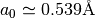
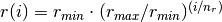
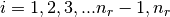
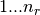
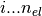
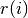
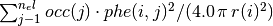
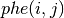
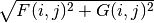
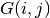

This chapter covers the main modules of the phaseshifts and provides some API documentation for those wishing to incorporate this package into their own projects.
atorb.py
Provides convenience functions for generating input and calculating atomic charge densities for use with the Barbieri/Van Hove phase shift calculation package.
| See: | http://www.icts.hkbu.edu.hk/surfstructinfo/SurfStrucInfo_files/leed/ |
|---|---|
| Requires: | f2py (for libphsh fortran wrapper generation) |
Note
To generate libphsh fortran wrappers (libphsh.pyd) for your platform then use ‘python setup.py’ in the lib directory of this package to install into your python distribution. Alternatively, use:
f2py -c -m libphsh libphsh.f
Windows users may have to add appropriate compiler switches, e.g.
f2py -c -m libphsh --fcompiler=gfortran --compiler=mingw-32 libphsh.f
Bases: object
Notes
Original author: Eric Shirley
There are nr grid points, and distances are in Bohr radii 
, 
The orbitals are stored in phe(), first index goes , the second index is the orbital index ()
Look at the atomic files after printing this out to see everything... Suffice it to say, that the charge density at radius  in units of electrons per cubic Bohr radius is given by:

Think of the phe functions as plotting the radial wave-functions as a function of radius on a logarithmic mesh...
The Dirac equation is solved for the orbitals, whereas their density is treated by setting  to Dirac’s  times the sign of ...
So we are doing Dirac-Fock, except that we are not treating exchange exactly, in terms of working with major and minor components of the orbitals, and the phe’s give the CORRECT CHARGE DENSITY...
The above approximation ought to be very small for valence states, so you need not worry about it...
The Breit interaction has been neglected altogether...it should not have a huge effect on the charge density you are concerned with...
| Parameters: | kwargs may be any of the following. : element : int or str, optional
input : str, optional
output_dir : str, optional
|
|---|---|
| Returns: | str : filename |
Examples
>>> Atorb.calculate_Q_density(input='atorb_C.txt')
18.008635 -33.678535
4.451786 -36.654271
1.569616 -37.283660
0.424129 -37.355634
0.116221 -37.359816
0.047172 -37.360317
0.021939 -37.360435
0.010555 -37.360464
0.005112 -37.360471
0.002486 -37.360473
0.001213 -37.360473
0.000593 -37.360473
0.000290 -37.360474
N L M J S OCC.
1 0 0 -1/2 1 2.0000 -11.493862
2 0 0 -1/2 1 2.0000 -0.788618
2 1 1 -1/2 1 0.6667 -0.133536
2 1 1 -3/2 1 1.3333 -0.133311
TOTAL ENERGY = -37.360474 -1016.638262
>>> Atorb.calculate_Q_density(element='H')
0.500007 -0.343752
0.152392 -0.354939
0.065889 -0.357254
0.028751 -0.357644
0.012732 -0.357703
0.005743 -0.357711
0.002641 -0.357712
0.001236 -0.357713
0.000587 -0.357713
0.000282 -0.357713
N L M J S OCC.
1 0 0 -1/2 1 1.0000 -0.229756
TOTAL ENERGY = -0.357713 -9.733932
| Parameters: | element : int or str
output : str, optional
ngrid : int, optional
rel : bool, optional
filename : str, optional
header : str, optional
method : str, optional
relic : float, optional
mixing_SCF : float, optional
tolerance : float, optional
ech : float, optional
|
|---|
| Returns: | tuple : (int, int, list[float, float], list[float, float])
|
|---|
Notes
| Parameters: | electron_config : str
|
|---|---|
| Returns: | str : :
|
Examples
>>> Atorb.replace_core_config('[Ar] 4s2')
'1s2 2s2 2p6 3s2 3p6 4s2'
>>> Atorb.replace_core_config('[Xe] 6s2 5d1')
'1s2 2s2 2p6 3s2 3p6 3d10 4s2 4p6 5s2 4d10 5p6 6s2 5d1'
conphas.py
Provides a native python version of the conphas (phsh3) FORTRAN program by W. Moritz, which is distributed as part of the SATLEED code (see “Barbieri/Van Hove phase shift calculation package” section) and can be found at: http://www.icts.hkbu.edu.hk/surfstructinfo/SurfStrucInfo_files/ leed/leedpack.html
The Conphas() class also provides a number of convenience functions (see docstrings below).
>>> from os.path import join
>>> from phaseshifts.conphas import Conphas
>>> con = Conphas(output_file=join('testing', 'leedph_py.d'),
lmax=10)
>>> con.set_input_files([join('testing', 'ph1')])
>>> con.set_format('cleed')
>>> con.calculate()
Class Conphas
Notes
This work is based on the original conphas (phsh3) FORTRAN program by W. Moritz, which is distributed as part of the SATLEED code (see “Barbieri/Van Hove phase shift calculation package” section) and can be found at: http://www.icts.hkbu.edu.hk/surfstructinfo/SurfStrucInfo_files/ leed/leedpack.html
Fix escaped characters in filepath
Calculates continuous phase shifts from input file(s).
Examples
>>> con = Conphas(output_file=r'testing\leedph_py.d', lmax=10)
>>> con.set_input_files([r'testing\ph1'])
>>> con.set_format('cleed')
>>> con.calculate()
L = 0
jump between 25.0 eV and 30.0 eV; IFAK = -1
L = 1
jump between 65.0 eV and 70.0 eV; IFAK = -1
L = 2
jump between 20.0 eV and 25.0 eV; IFAK = 1
jump between 80.0 eV and 85.0 eV; IFAK = 0
L = 3
L = 4
jump between 275.0 eV and 280.0 eV; IFAK = 1
L = 5
L = 6
L = 7
L = 8
L = 9
L = 10
Load (discontinuous) phase shift data from file
| Parameters: | file : str
|
|---|---|
| Returns: | tuple: (double, double, int, int, ndarray) :
|
Notes
Read in discontinuous phase shift file
| Parameters: | filename : str
|
|---|
Set appropriate format from available options
| Parameters: | format : str, optional
|
|---|
Properties of the chemical elements.
Each chemical element is represented as an object instance. Physicochemical and descriptive properties of the elements are stored as instance attributes.
| Author: | Christoph Gohlke |
|---|---|
| Version: | 2013.03.18 |
>>> from elements import ELEMENTS
>>> len(ELEMENTS)
109
>>> str(ELEMENTS[109])
'Meitnerium'
>>> ele = ELEMENTS['C']
>>> ele.number, ele.symbol, ele.name, ele.eleconfig
(6, 'C', 'Carbon', '[He] 2s2 2p2')
>>> ele.eleconfig_dict
{(1, 's'): 2, (2, 'p'): 2, (2, 's'): 2}
>>> sum(ele.mass for ele in ELEMENTS)
14659.1115599
>>> for ele in ELEMENTS:
... ele.validate()
... ele = eval(repr(ele))
Provides CLEED validator and Converter classes.
The CLEED_validator() class provides a method for checking the input files for errors, whereas the Converter.import_CLEED() method allows importing CLEED input files as a MTZ_model class
Bases: object
Class for validation of CLEED input files
Bases: object
Bases: object
Convert different input into phaseshift compatible input
Imports CLEED input file and converts model to muffin-tin input.
the basis vectors a1, a2, & a3 are x,y,z cartezian coordinates
if no a3 is found, the maximum z distance between atoms multiplied by four is given
the unitcell is converted from cartezian to fractional coordinates
atom sites are converted from Angstrom to Bohr units
additional info from the phase shift filename is provided by splitting the ‘_’ chars:
- First string segment is element or symbol, e.g. Ni
- Second string segment is the oxidation, e.g. +2
lines with ‘rm:‘ provide the radii dictionary of the atomic species
if no ‘rm:‘ found for that species, the atomic radius is used for zero valence, otherwise the covalent radius is used.
Additional information can, however, be provided using ‘phs:’ at the start of a line within the input file and may have the following formats:
- “phs: c <float> nh <int> nform <int> exchange <float>“
- “phs: <phase_shift> valence <float> radius <float>“
The identifiers exchange, nform, valence and radius may be abbreviated to exc, nf, val and rad, respectively.
| Parameters: | filename : str
|
|---|---|
| Returns: | phaseshifts.model.MTZ_model : |
| Raises: | IOError : filename invalid ValueError : bad formatting of input |
model.py
Provides convenience functions for generating input and calculating atomic charge densities for use with the Barbieri/Van Hove phase shift calculation package.
Bases: object
Atom class for input into cluster model for muffin-tin potential calculations.
Bases: exceptions.Exception
Coordinate exception to raise and log duplicate coordinates.
Bases: phaseshifts.model.Model
Muffin-tin potential Model subclass for producing input file for muffin-tin calculations in the Barbieri/Van Hove phase shift calculation package.
| Parameters: | atomic_file : str
cluster_file : str
slab : int or bool
output : dict
|
|---|---|
| Returns: | output_files : list(str)
|
| Returns: | output_files : dict
|
|---|
| Parameters: | input_dir : str
input_files : tuple
output_file : str
|
|---|---|
| Returns: | output_file : str
|
| Raises: | IOError : exception
|
Notes
If ‘input_files’ is not given then the default list of input files are inferred from the list of atoms in the model.
| Returns: | filename on success : |
|---|---|
| Raises: | CoordinatesError : exception
|
| Parameters: | filename : str
|
|---|---|
| Raises: | IOError : exception
TypeError : exception
|
Bases: object
Generic model class.
| Returns: | nineq_atoms, element_dict : tuple
|
|---|
Append an Atom instance to the model
| Parameters: | element : str or int
position : list(float) or ndarray
|
|---|
Check for duplicate coordinates of different atoms in model.
| Raises: | CoordinateError : exception
|
|---|
Bases: object
Unitcell class
| Parameters: | a: float :
|
|---|
Notes
To retrieve a in terms of Angstroms use ‘unitcell.a’, whereas the internal parameter ‘unitcell._a’ converts a into Bohr radii (1 Bohr = 0.529Å), which is used for the muffin-tin potential calculations in libphsh (CAVPOT subroutine).
| Parameters: | c : float
|
|---|
Notes
To retrieve c in terms of Angstroms use ‘unitcell.c’, whereas the internal parameter ‘unitcell._c’ converts c into Bohr radii (1 Bohr = 0.529Å), which is used for the muffin-tin potential calculations in libphsh (CAVPOT subroutine).